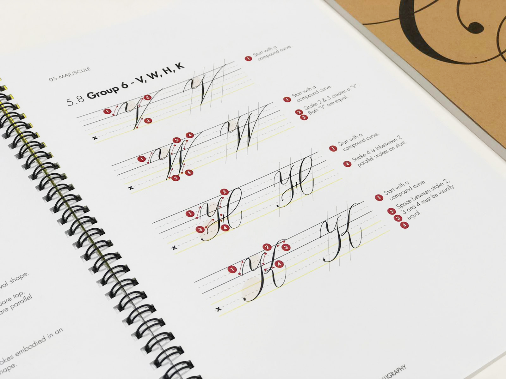

Calligraphy
Calligraphy is the art of writing which makes use of a few basic strokes to form letters. Traditionally, this was done in ink, for example, in Copperplate calligraphy.


Modern calligraphy is a beautiful hobby that anyone can pick up. It just requires paper and a pencil to begin. So what are you waiting for?
Calligraphy is the art of writing which makes use of a few basic strokes to form letters. Traditionally, this was done in ink, for example, in Copperplate calligraphy.
As time progressed, other forms of calligraphy were popularised, breaking the rules of the uniformed style of traditional calligraphy. These other forms of calligraphy were coined under the term ‘modern calligraphy’ and gave calligraphers more freedom for creativity and self-expression. In this website, you will find an exploration of the basics of modern calligraphy, and some simple types of calligraphy that you may wish to begin your calligraphy journey with!